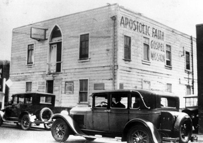

USKONTOOPPIMATERIAALIA NETISSÄ VUODESTA 1999 LÄHTIENPSYKOLOGIAN PIKALINKIT PSYKAN VIDEOABIKURSSI: PS7 ABI KERTAUSKURSSI (OPS 2016-): PS1 Psyykkinen toiminta ja oppiminen PS2 Kehittyvä ihminen PS3 Tietoa käsittelevä ihminen PS4 Tunteet, psyykkinen hyvinvointi ja mielenterveys PS5 Yksilöllinen ja yhteisöllinen ihminen Uskonto: UE1 UE2 UE3 UE4 UE5 UE6 Filosofia: FI1 FI2 FI3 FI4 FI5  Norjalainen metodistipappi Thomas Barratt tutustui helluntailaisuuteen aivan sen alkuaikoina Yhdysvalloissa. Hän koki ns. kieli-ihmeen ja hänestä tuli helluntailaisuuden pohjoismaihin tuoja. Barratt vierailu myös Suomessa muutamia kertoja. SUOMEN USKONNOLLINEN KENTTÄ (linkit sivustoni teksteihin): SUURIMPIA: Suomen evankelis-luterilainen kirkko Suomen ortodoksinen kirkko Suomen helluntaiherätys Islam Jehovan todistajat Suomen Vapaakirkko Katolinen kirkko Suomessa Suomen Adventtikirkko Mormonit MUITA KRISTILLISIÄ OSIN RYHMITELTYNÄ: Pelastusarmeija Anglikaanit Baptismi Metodismi Evankelikaalisia Karismaattisia Muita luterilaisia ja kristillisiä MUITA USKONNOLLISIA YHTEISÖJÄ OSIN RYHMITELTYNÄ: Krist.vaikutteisia Buddhalaisuus Juutalaisuus Hindulaisperäisiä Synkretistisiä Muita |
Helluntaiherätys ja Suomen Helluntaikirkko
Suomen helluntaikirkko
Suomen Helluntaikansa Ry Helluntaiherätys Aikamedia Iso Kirja Pääkaupunkiseudun kristillisiä tilaisuuksia esittelevä sivusto TILAISUUDET.INFO
PROTESTANTTISILLE VÄHEMMISTÖKIRKOILLE YHTEISIÄ PIIRTEITÄ: • Helluntailiike syntyi Yhdysvalloissa 1900-luvun alussa - metodistievankelista Charles F. Parham avasi v. 1900 raamattukoulun Kansasin Topekassa. Koulun nimi Bethel College, jonka ainoa oppikirja oli Raamattu. Oppilaita n. 30 tulivat lähinnä pyhitysliikkeen vaikutuksenalaisista kirkoista. Pyrkimys oli tulla hyviksi evankelistoiksi. Kiinnostuttiin Pyhästä Hengestä ja tutkittiin, mikä oli henkikasteen merkki Raamatussa. Oppilaat rukoilivat paljon ja odottivat Herran ilmestymistä. Uutta vuotta vasten yÖllä 1901 osa oppilaista valvoi rukouksessa. Agnes Ozman pyysi silloin erästä ystäväänsä laittamaan kädet päällensä. TyttÖ täyttyi Pyhällä Hengellä ja rupesi puhumaan kielillä. 3.1.1902 12 muuta oppilasta täyttyi. Kun Parham tuli huoneeseen, oli huone kuin valoa täynnä, hän painui polvilleen ja täyttyi itse Hengellä. > Tästä syntyi ns. Kansas-ryhmä. Bethel College suljettiin ja uutta viestiä lähdettiin viemään eteenpäin Texasiin ja Missouriin. 1905 Parham avasi uuden raamattukoulun Texasin Houstoniin, jossa opiskeli mustaihoinen pastori W.J. Seymour. Parhamin evankelioimistoiminta oli menestyksellistä (Christianity Today mainitsee kääntyneiden määräksi peräti 25000). - kielilläpuhumista pidettiin yleisesti ksenolaliana, sillä monet siirtolaiset, jotka eivät osanneet englantia, kuulivat puhuttavan omaa äidinkieltään ja heitä tuli kymmeniä kääntymykseen. Ihmiset pitivät kielilläpuhujia hulluina. (KielilläpuhumisilmiÖssä ksenolalia tarkoittaa kuulijalle ymmärrettävää, olemassaolevaa kieltä, kun taas glossolalia ns. "enkelten kieltä", jota kukaan ihminen ei voi ymmärtää ilman erityistä kielten selittämisen lahjaa). - v. 1906 Los Angelesin hengenvuodatus teki liikkeestä kansainvälisen. Los Angelesissä toimi pyhitysliikkeeseen kuuluva Frank Bartleman, joka kuuli F.B. Meyerin kautta Walesin herätyksestä. Aloitti rukouskokoukset kodissaan. MyÖs baptistisaarnaaja Joseph Smale kuuli Walesin herätyksestä ja alkoi rukoilla Hengen tulta, hän muodosti uuden seurakunnan: Uuden Testamentin Seurakunta. Kolmas ryhmä oli metodisteista eronnut pyhityskirkko, Nasaretin kirkko, jonne baptistisaarnaaja W.J. Seymouria yydettiin puhumaan. Keväällä 1906 hän saapui sinne ja kirkossa päätettiin rukoilla ja paastota 10 päivää, he täyttyivät Pyhällä Hengellä 9.4.1906 (ensimmäisenä täyttyi 9-vuotias mustaihoinen poika). Kaikkiaan 7 henkeä täyttyi tuossa kokouksessa. Kaikki puhuivat kielillä. - 19.4.1906 vuokrattiin Azusa-katu 312(ks. viereinen valokuva, kuvalla ei tekijänoikeuksia ns. public domain), sillä Bonnie Brae -kadun(Nasaretin kirkon) rakennus sortui väenpaljoudesta. Lattialle laitettiin hiekkaa, tyhjien naulalaatikoiden päälle lankkuja istuimiksi ja puhujanpÖnttÖ muodostui kahdesta päällekkäin asetetusta pakkilaatikosta. Kun Seymour istui rukoillen, hän tavallisesti piti päätään ylemmässä laatikossa. Saliin sopi 600 ihmistä. Azusa-kadulla kokoonnuttiin 3 vuotta ja lehdet kiinnostuivat asiasta suuresti. Asiaa pidettiin suggestiona ja hurmoksellisuutena. Varsinaista johtajaa ei kokouksissa ollut, sillä haluttiin antaa Hengen johtaa (sisälsi rukousta, palvontaa, todistuksia, kiitosta ja saarnaa). Kokouksissa tavallisesti Seymour saarnasi, sairaitaparani, sieluja pelastui ja ennen kaikkea uskovia täyttyi Pyhällä Hengellä. 
- mustaihoisen William John Seymourin toimintaa on nykyisin pidetty kaikkein tärkeimpänä helluntailaisuuden synnylle. On arveltu, että Yhdysvalloissa rotupolitiikan vuoksi Seymourin vaikutus aliarvioitiin ja tämä heijastuu edelleenkin helluntaiherätyksen historiaa puitaessa. Valkoihoisen Parhamin merkitystä on korostettu liikaa Seymourin kustannuksella.• Suomeen v. 1911 norj. T. B. Barrattin tuomana - ensivaikutteet 1908; jolloin 1908-1911 Barrattia pyydettiin jatkuvasti Suomeen; aluksi ruotsinkielisten keskuudessa rannikkoseudulla - Norjalainen metodistipastori Thomas Ball Barratt (synt. E-Englannissa, Cronwallissa 22.6.1862; josta perhe muutti Norjaan, opiskeli mm. musiikkia Edvard Griegin johdolla, kuoli 29.1.1940) oli matkalla New Yorkissa keräämässä varoja perustamaansa kaupunkilähetystä varten. New Yorkista hän kirjoitti 8.10.1906 päivätyssä kirjeessä: "Halleluja! Se tapahtui eilen (sunnuntaina 7.10) klo 5 ja 6 välillä iltapäivällä. Oi, kiitetty olkoon Herra! - minun sielussani palaa. Olen täytetty ilolla ja rakkaudella Jumalaan ja ihmisiin, halleluja," Barratt oli täyttynyt Pyhällä Hengellä. Barratt kuuli Azusa-kadun kokouksista ja oli kirjeitse yhteydessä Los Angelesiin seuraten tapahtumia mielenkiinnolla. Barratt alkoi itse NY:ssa odottaa Hengen kastetta paastoten ja rukoillen ja sai sen em. kokea. - Barratt palasi Norjaan 1907 ja kokoukset muuttuivat Kristianissa, kansat lähtivät liikkeelle; mm. baptistipastori Lewi Pethrus (ruots.) sai kokea uudistuksen ja täyttyi Pyhällä Hengellä. Pethruksesta tuli Ruotsin helluntaiherätyksen uranuurtaja. Herätys levisi Norjaan nopeasti. Vasta v. 1916 perustettiin Oslon Filadelfiaseurakunta (alussa n. 200, v. 1933 1700 jäsentä). - Barratt tuli Suomeen uskovien kutsusta syksyllä 1911. Kirjailija Pekka Brofeldt (1864-1945) oli v. 1910 eronnut Kotimaa-lehden päätoimittajan tehtävästä ja perustanut oman Toivon Tähti -lehden v. 1911. Pekka Brofeldt oli kirjailija Juhani Ahon veli. Tämä lehti alkoi kertoa helluntai-ilmiÖstä. Barrattin perustama Korsets Seier -lehti käännettiin suomeksi ja tammikuussa v. 1912 ilmestyi ensimmäinen näytenumero Ristin Voitosta. 1912 B. vieraili toistamiseen Suomessa. - 1.7.1912 ensimmäinen kastetilaisuus Lempäälässä ja 7.7.1912 Helsingin Kaivopuiston rannassa. - helluntaiherätykseen mukaan aluksi luterilaisia lestadiolaisia, lähetysseuralaisia ja metodisteja - Barrattin vierailun jälkeen alkoivat samaa linjaa vetää mm. Emil Danielsson ja Pekka Brofeldt (1864-1945). - keväällä 1912 saapui Suomeen Gerhard Olsen-Smidt, joka toimi todellisena johtajana vuosina 1912-14, 1919-25. Smidt oli entinen Pelastusarmeijan upseeri, joka oli Yhdysvalloissa täyttynyt Pyhällä Hengellä. - aluksi ei tarkoitusta muodostaa uutta herätysliikettä, mutta helluntaihenkisiä alettiin painostaa ja suorastaan erottaa seurakunnista. Smidt alkoi opettaa, että oli lähdettä ulos kaikista suunnista. 1914 Smidt joutui sotatilan vuoksi ulkomaalaisena lähtemään maasta. (v. 1914 kävi Frank Bartleman Suomessa). 1914 pidettiin Lahdessa kesäjuhla, jonka päivillä allekirjoittivat veljeskokouksen nimiluetteloon mm. G. Smidt (pelastusarm), Pekka Brofeldt (Lähetysseura), Vilho Pylkkänen (LS), Alfred Lahtinen (vap. evankeliset), Paul Leppänen (bapt.), Pekka Lattu (met.), Pekka Nuutinen (met.) ja Evert Jäppinen (NMKY). On mielenkiintoista huomata, miten erilaisista kristillisistä suunnista allekirjoittaneet ovat. - Suomen ensimm. helluntaiseurakunta syntyi Helsinkiin v. 1915 Siloam nimiseksi Albin Kervisen johdolla ns. "helluntaibaptistit". Monet harhaopit yrittivät tunkeutua srk:aan (mm. pyhitysoppeja, jalkainpesu -oppeja, Jeesus Yksin -oppi jne.) - v. 1919 päätettiin, että ehtoollinen kuuluu vain uskoville, jotka ovat uskovina kastettu (vain Pylkkänen jäi vapaamman kannan edustajaksi). - Tärkeitä sananjulistajia: William Uotinen (s. 1904), Eino Manninen (1896-1967), Rafael Öhrnberg (1904-54, Vilho Hartonen (1903-), Toimi YrjÖlä (s.1909) lähetiksi v. 1929 Helsingin Saalemin lähettämänä Kiinaan, Eino Ahonen (1914-77) - v. 1920 Helsinkiin helluntaiseurakunta, joka myÖhemmin nimeksi Filadelfia - toisen maailmansodan jälkeen n. 15 vuoden herätysjakso, jolloin helluntailaisuus levisi lähes kaikkialle, missä sitä nykyisinkin on. - 1950-luvun jälkeen helluntailaisuuden vaikutuksesta Suomessa on vieraillut joukko nimekkäitä uskonnollisia vaikuttajia mm. William Branham (ajautui myÖhemmin omaksi uskonnokseen, branhamilaisuudeksi), Billy Graham, Argentiinalaiset Carlos Annacondia ja Luis Palau, korealainen maailman suurimman yksityisen seurakunnan Yoido Full Gospel Churchin johtaja Paul Yonggi Cho. - 60-luvulla tapahtui helluntailaisuudessa hajaantumista ja liikkeen jäsenmäärä ei juurikaan kasvanut vielä 70-luvun alussa - 1970-80 lukujen vaihteessa Niilo Ylivainion toiminta nostielluntailaisuuden uudelleen voimakkaaseen kasvuun, joka on jonkin verran hiljentyi välillä, mutta 90-luvulle tultaessa helluntailaisuus on etenkin nuorison keskuudessa saanut uutta kiinnostusta (esimerkiksi Lasse Heikkilän musikaalien ja messujen muodossa). - 1990-luvulla helluntailaisuus on tehnyt voimakasta TV-työtä Venäjälle lähinnä Hannu Haukan ja TV-evankelista Markku Vuorisen toimesta. - monet urheilijat ovat kääntyneet helluntailaisuuteen ja tehnyt liikettä tunnetuksi maassamme: viime vuosien tunnetuin helluntailainen urheilija on ollut varmasti maailmanmestari, kävelijä Sari Essayah - tunnettuja helluntailaisia, saarnaajia, kirjoittajia ja puhujia 1990-luvulla: Valtter Luoto, Kai Antturi, Toivo Haapala, Veikko Pekki, Esko Halme, Juhani Kuosmanen, Juhani Karvinen, Seppo Pehkonen, Markku Vuorinen, Viktor Klimenko, Eija Merilä, Heimo Enbuska. - suurimmat helluntaiseurakunnat löytyvät suurimmista kaupungeista: mm. Helsingistä Saalem. • Helluntailaisia kastettuja jäseniä n.47000, ja tähän lukuun voidaan lisätä tietysti myös esim. perheen lapset päälle. - määrä kasvaa jatkuvasti - ja kasvoi voimakkaasti Niilo Ylivainion aikana - maailmassa jäseniä n. 250 miljoonaa, joidenkin tilastojen mukaan jopa 300 miljoonaa; karismaatikot mukaan luettuina n. 600 miljoonaa. Suomen helluntaiseurakuntien oman ilmoituksen mukaan maailmassa on ns. perinteisiä helluntailaisia vuoden 1994 lopussa 217 miljoonaa. - Suomessa osa helluntaiseurakunnista liittyi 2000-luvun alkupuolella perustettuun Suomen Helluntaikirkkoon, mutta jäseniä siinä on kuitenkin tällä hetkellä vain 7500 (v. 2013). Suurin osa paikallisista helluntaiseurakunnista ei ole ollut halukkaita lähtemään kirkkokuntaan mukaan. Helluntailaisten lukumäärä tiedetään kuitenkin paikallisseurakuntien tilastoinnin ansiosta suhteellisen tarkasti; osa helluntailaisista kuuluu siis omaan helluntaikirkkoon, mutta suurin osa siviilirekisteriin, osa jopa luterilaiseen kirkkoon - vuoden 2013 lopulla helluntaiseurakuntien rekistereissä oli yhteensä 46400 jäsentä. Lisäksi oman kuvionsa helluntailiikkeen toimintaan toi tammikuussa 2002 perustettu Suomen Helluntaikirkko. Kun helluntailaisten määrään lasketaan kastamattomat perheen jäsenet, helluntaiherätyksen piiriin kuuluu lähes 100 000 suomalaista. • Opillisia korostuksia: - opin perustana Raamattu - opin perustana korostetaan yksin Raamattua, mutta sitä tulkitaan oman helluntaialis-fundamentalistisen perinteen mukaisesti. Raamattu nostetaan auktoriteetiksi mm. luonnontieteitä koskeviin asioihin, siksi helluntailaiset ovat tavallisimmin kreationisteja (luomisuskon korostajia, jotka vastustavat evoluutioteoriaa). - nykyisin opillisena yhdistäjänä seurakunnissa Ristin Voitto ja Hyvä Sanoma lehdet sekä Katinalan Raamattuopisto ja nykyisin Keuruun Iso Kirja -opisto. - pelastuminen yksin uskosta - Kristuksen sovituskuoleman merkitys nähdään keskeisenä. Ihminen pelastuu yksin uskosta, mutta usko on erityisesti ihmisen henkilÖkohtainen uskonratkaisu. Jumalan vastaus ihmisen uskoon on ihmisen uudestisynnyttäminen Hengestä (ylhäältä). - Lasta ei kasteta, koska perisyntioppi joko kielletään tai sitten korostetaan, että lapsi on kyllä osallinen perisynnistä, mutta ei enää Kristuksen sovitustyÖn nojalla perisynnin tuomasta syyllisyydestä. Lapsi pelastuu Kristuksen tyÖn ansiosta ilman uskoa, sillä lapsi on viattomuuden tilassa. - ihmisen tahto on vapaa (ei sidottu, kuten Luther opetti). Ihminen voi siis evankeliumin sanoman kuulutuaan tahtoa pelastumistaan ja kääntyä Jumalan puoleen. - kielilläpuhuminen merkkinä erityisestä henkikastekokemuksesta HELLUNTAILAINEN OPETUS HENKIKASTEESTA (HUOM! ENSISIJAISESTI LAINAUKSIA HELLUNTAILIIKKEEN JULISTAJILTA JA RISTIN VOITON KUSTANTAMISTA KIRJOISTA): - Valtter Luoto (Ristin Voitto 15/89 s.5): "Opetuksessa tältä alueelta vallitsee paljon kirjavuutta. Suurin ero lienee siinä, että niin luterilaisessa kuin perinteisessä baptistisessakin opetuksessa Pyhän Hengen kasteeksi kutsutaan sitä Pyhän Hengen työtä, mikä tapahtuu uudestisyntymisen yhteydessä. "Luterilaiset ja baptistiset karismaatikot puhuvat sitten armolahjojen yhteydessä Pyhällä Hengellä täyttymisestä, mitä kokemusta taas helluntailaisessa opetuksessa kutsutaan Pyhän Hengen kasteeksi. Opetamme myös Pyhällä Hengellä täyttymisestä. Se ei ole vain kerran koettava asia, vaan jatkuvasti uudistuva kokemus. UT ei ole kovinkaan dogmaattinen näiden termien käytÖssä, vaan käsittelee vapaasti sanontoja "kastaa Pyhällä Hengellä", "täyttyä Pyhällä Hengellä", "saada Pyhän Hengen lahja". - Veikko Pekki (Ristin Voitto 49/88 s.5): "Pyhällä Hengellä kastetuksi tuleminen on kristitylle heti alussa tärkeää, koska Herra itsekin kastettiin Hengellä ennen kuin Hän aloitti toimintansa (Matt.3:13-17). Tämän kokemuksen Hän katsoi ehdottomasti kuuluvan jokaiselle seuraajalleen. Jeesus kielsi lähtemästä eteenpäin lähetystehtävässä ennen Pyhän Hengen kastetta". - Juhani Karvinen kirjoittaa henkikasteesta (Ristin Voitto 14/88 s.4): "Jumala haluaa antaa lapsilleen kielillä puhumisen siksi, että voisimme rakentaa sillä itseämme ja varmistua tuosta näkyvästä ja kuuluvasta merkistä, lahjan todellisuudesta tunteiden häälyvässä ristiaallokossa. Tätä tapahtumaa nimitetään henkikasteeksi Johannes Kastajan asiasta lausuman ennustuksen mukaisesti (Mark.1:8). Henkikasteen Apostolien teoissa havaittava ainoa varma merkki on kielillä puhuminen, johon voi liittyä myöskin tulisia kieliä tai ennustamista. Vaikka henkikaste ja Hengen täyteys eivät olekaan sama asia, täyttyivät helluntain jälkeen Hengellä ne kristityt, jotka olivat jo saaneet henkikasteen. On siis käsitettävissä, että henkikastetun on täytyttävä Hengellä yhä uudelleen ja uudelleen, joko kielien kanssa tai ilman." - Mauri Viksten (Ristin Voitto 41/87 s.4): "Niin kuin uudestisyntymän kokemusta seuraa sisäinen todistus, samoin Pyhän Hengen kastetta näyttää seuraavan kielimerkki". Viksten, Terveen opin pääpiirteitä: "Tämän kirjoitussarjan puitteissa käytetään nimityksiä Pyhän Hengen kaste ja Pyhällä Hengellä täyttyminen saman tapahtuman erilaisina ilmaisukeinoina - kuten Uusi Testamenttikin näyttää tekevän (Mt.3:11, Apt.2:4, 1:5, 11:16). Sama asia on ilmaistu myös sanoilla 'Pyhän Hengen lahja' (Apt.10:44-48, 15:6-9). Opetuslapsilla oli jo ennen helluntaita osallisuus Pyhään Henkeen ja sen mukanaan tuomia erinäisiä valtuuksia. YlÖsnousemisensa jälkeen Jeesus kuitenkin antoi heille selvän ilmoituksen siitä, että heidän tuli odottaa Pyhän Hengen täyteyttä ollakseen kykeneviä suorittamaan osuutensa maailmanlaajuisessa lähetystehtävässä. Raamattu ilmoittaa tämän Pyhän Hengen lahjan kuuluvan jokaiselle uskovalle (Apt.2:38-39)." - Reinhold Ulonska kirjassaan Yhteiseksi hyödyksi (Pyhän Hengen lahjat ja niiden käyttÖ): "Henkikaste ei ole meidän mielestämme samaa kuin pelastuskokemus, vaan se on uusi kokemus, jossa me saamme Pyhän Hengen voiman. Oliko opetuslapsien helluntaikokemus samalla heidän pelastuskokemuksensa? Me ymmärrämme pelastuskokemuksella varmuuden saamista siitä, että meidät on hyväksytty Kristuksen työn kautta Jumalan lapsiksi ilman omia ansioitamme. Opetuslapset kokivat pelastumisen jo ennen helluntaita ollessaan henkilÖkohtaisesti tekemisissä Jeesuksen kanssa. He kuulivat Jeesuksen omasta suusta kutsun seurata ja seurasivat häntä. He tunsivat olevansa syntisiä ja kadotettuja kohdatessaan Jeesuksen. 'Herra, mene pois minun luotani, sillä minä olen syntinen ihminen.' Jeesus antoi heille myös varmuuden siitä, että he olivat puhdistuneet synneistään. 'Te olette jo puhtaat sen sanan tähden, jonka olen teille puhunut.' Jeesus vakuutti heille, että heidän nimensä oli kirjoitettu taivaassa. Helluntai on tapahtumana paljon enemmän kuin opetuslasten erikoinen helluntaikokemus. Pyhä Henki tuli helluntaina maailmaan, ja ihmiskunnan puolustajan tehtävä siirtyi Pyhälle Hengelle." - Harold Horton kirjoittaa kielilläpuhumisesta kirjassaan Pyhän Hengen lahjat (RV 39): "Juuri tämä lahja ilmenee joka kerran, kun uskovat vastaanottavat Pyhän Hengen kasteen, joskin muuitakin lahjoja saattaa ilmetä sen ohessa" (s.106). Horton jatkaa: "Kielten ensimmäinen tarkoitusperä on, että ne ovat raamatullinen osoitus Pyhän Hengen kasteesta" (s.108). Lisäksi Horton vastaa kysymykseensä "Onko eroa Hengen kasteen ensimmäisenä merkkinä olevien kielten ja kielillä puhumisen lahjan välillä, jota on tarkoitus käyttää uskovien kokouksessa? Jokainen puhuu kielillä ainakin kerran saadessaan Hengen kasteen (Apt.2:4; 10:45 jne.), mutta ilmeisesti kaikilla ei säily tämä voima puhua kielillä (1.Kor.12:30), joskaan Raamatussa ei näytä lÖytyvän mitään syytä, mikseivät he voisi sitä säilyttää (1.Kor.14:5,23)." - Donald Gee kirjoittaa kirjassaan "Hengen lahjoista" (s.101-102): "Ja Jumala tahtoo, että puhumme kielillä, sillä Hän oikein halajamalla halajaa kuulla meidän henkemme palvontaa hengessä ja totuudessa. Uskon, että jos ihmiset oikealla tavalla ymmärtäisivät tätä helluntaisiunausta, niin jokainen Jumalan lapsi etsisi sitä. Auttakoon Herra meitä kertomaan kokemuksistamme niin, että se vaikuttaisi ihmisiin! Uskon, että helluntaikansalla on paras sanoma tänä aikana. Uskon, että heillä on sanoma, jota kirkkokunnat kaipaavat. On surullista, ettemme ole aina esittäneet sanomaamme niin kuin meidän olisi pitänyt. Rukoilen, että kautta maailman Jumala auttaisi meitä esittämään sanomamme niin selvänä ja ihanana, että ihmiset oikein halajaisivat sitä, mitä Hänellä on antaa." - Mikä neuvoksi -palstalla Ristin Voitossa oli mielenkiintoinen kysymys nimimerkillä "Ongelma": "Puolestani on monta kertaa rukoiltu. Rukoilijat ovat kehottaneet minua käyttämään kieltäni ja puhumaan kielillä. Mutta kun kieliä ei tule, vaikka kuinka nopeasti kiittäisin. Tunnen vain suggeroivani itseäni. Mieheni sanoo minussa olevan jotain vikaa, kun en ole saanut henkikastetta. Jotkut saarnaajat ovat vakuuttaneet minulle, että olen saanut henkikasteen. Itse en kuitenkaan tiedä sitä saaneeni ja olen hyvin pettynyt. Olen vielä uskossa nuori, enkä ymmärrä näitä asioita". - Osa Taisto Vahteran vastauksesta: "Henkikasteeksi nimittämämme Uuden testamentin Pyhällä Hengellä täyttyminen eroaa muista Pyhän Hengen vaikutuksista muunmuassa siinä, että sen yhteydessä esiintyy kielillä puhumista. Tällöin Pyhä Henki täyttää ihmisen enemmän kuin täyteen ja 'viini' alkaa virrata yli äyräidensä. Mielestäni ei tulisi etsiä kielillä puhumista, vaan Pyhää Henkeä. Nopeassa kiitoksessa voi kieli mennä sekaisin, vaikka mitään muuta ei tapahtuisikaan. Kielillä puhuminen ei ole mikään ongelma sen jälkeen, kun on täyttynyt Pyhällä Hengellä. Pidän myös kiinni siitä, että Uuden testamentin henkikastekokemukseen liittyy kielilläpuhuminen. Sidottu, jännittynyt tai pelokas mieli saattaa tietenkin haitata tarpeellista vapautumistasi etkä kykene antautumaan Pyhän Hengen vaikutuksen alaiseksi. Janoa vain hartaasti, kyllä Jumala ajallaan janosi tyydyttää. Saattaa olla, että Hän kuitenkin ensin tyhjentää 'astiasi' niin tyhjäksi, että koet ihan epätoivoa. Kun hän maljasi täyttää, voi se tapahtua aikana ja paikassa, jolloin vähiten odotat. Varsin monille on käynyt näin. Odota Herraa ja rukoile, kyllä hän sinutkin vielä kastaa Pyhällä Hengellä." - KOOTUSTI: 1) Opetuslapset olivat jo ennen helluntaita saaneet Pyhän Hengen ja siten syntyneet Hengestä. Samoin jokainen, joka uskoo Jeesukseen saa Hengen sisimpäänsä. 2) Helluntaintapahtuma ei liity mitenkään Hengen ensikertaa tulemiseen opetuslapsiin pysyvästi, vaan oli tietty erikoinen henkikaste, jossa VT:n, Johanneksen ja Jeesuksen lupaukset toteutuivat. 3) Henkikaste sanan synonyymi on Hengellä täyttyminen, mutta usein Hengellä täyttyminen on jatkuva tapahtuma, joka voi toistua, kun taas varsinainen henkikaste kielilläpuhumisineen on ainutkertainen. 4) Henkikasteen varma merkki on kielilläpuhuminen. Kielilläpuhuminen ei välttämättä jää pysyväksi (armolahjaksi) ihmiselle. 5) Jokaisen kristityn tulisi tavoitella henkikastetta kielilläpuhumisineen, jotta hän voisi olla tehokas evankelioimistyössään ja jotta hän saisi kokea ihanan helluntaisiunauksen. - Esimerkiksi kuuluisan baptistievankelistan, Billy Grahamin opetus Hengellä täyttymisestä ja henkikasteesta eroaa perinteisestä em. helluntailaisesta linjasta: "En ole löytänyt Raamatusta yhtään kohtaa, josta pääsisi sellaiseen käsitykseen, että elämässämme uskoontulon jälkeen tarvittaisiin vielä uusi Hengen kaste. Henki on jo meissä, ja meitä kutsutaan yhä uudelleen antautumaan hänelle. En kuitenkaan koskaan tuomitse ihmisiä, joilla on toisenlainen näkemys. Läheisimpään ystäväpiiriinikin kuuluu monia, jotka ovat tästä asiasta kanssani eri mieltä. Näiden erimielisyyksien ei tarvitse rikkoa uskovien yhteyttä. Joskus Pyhä Henki tällaisessa tilanteessa täyttää ihmisen hyvin koskettavalla ja mieliinpainuvalla tavalla. Myös kypsemmät uskovat voivat saada valtavan hengellisen kokemuksen, jossa Pyhä Henki täyttää heidät tuoreesti ja ihanasti. Jotkut nimittävät tätä 'henkikasteeksi', mutta minusta on raamatullisempaa puhua 'uudesta Pyhällä Hengellä täyttymisestä'. Tällainen kokemus saattaa sattua johonkin ratkaisevaan elämänvaiheeseen, jossa ihmisen täytyy tehdä vaikeita päätöksiä tai jolloin hän on muuten erityisen ongelman tai haasteen edessä. Mutta sama kokemus voi tulla myös aivan hiljaa." (Pyhän Hengen lahja, KRS) - armolahjojen mm. sairaiden parantamisen korostus - armolahjoilla tarkoitetaan Jumalan antamia joko yliluonnollisia ns. ihmelahjoja tai sitten luonnollisia ns. palvelulahjoja - armolahjat luetteloitu Raamatun seuraavissa kohdissa: 1.Kor.12:4-14:40; Room.12:4-8 (sekä 1.Piet.4:7-11 ja Ef.4:11-16). - tunnetuimpia armolahjoja ovat kielilläpuhuminen ja sairaiden parantaminen - Niilo Ylivainion kokouksissa useat kokivat ns. kaatumisilmiön (tunnettu luterilaisuudessa mm. Seppo Juntusen ja Pirkko Jalovaaran rukousilloista sekä Nokian ent. kirkkoherran ja ent. Nokia Mission johtajan Markku Koiviston sanan ja rukouksen illoista). Ylivainion kokousten jälkeen monet kertoivat parantuneensa erilaisista sairauksista, useissa tapauksissa myÖs lääkärit totesivat parantumisen tapahtuneeksi. Lääkäri Martti Miettisen väitöskirjassa Ylivainion kautta parantuneista ihmisistä, Miettinen totetaa, että kysymyksessä olisi ollut ennemminkin ns. placebo-vaikutus kuin todellinen parantuminen. - uskovien upotuskaste - kaste sana tulee kreikan baptitzoo-verbistä, joka tarkoittaa "upottaa veden alle", siksi helluntailaisilla on käytössä ns. uskovien upotuskaste (ei aikuiskaste, sillä n. 10 vuotias lapsikin voidaan kastaa, jos hän tunnustaa uskonsa Jeesukseen). Kastettavaksi pyrkivän henkilön tulee tunnustaa uskonsa Jeesukseen, jotta hänet voitaisiin kastaa seurakunnan jäseneksi. - kaste ei pelasta ihmistä, vaan pelastuminen on tapahtunut jo aiemmin uskoontulon eli ns. uudestisyntymisen kautta, johon liittyy tiiviisti ihmisen tekemä henkilÖkohtainen uskonratkaisu. - kaste on kuuliaisuuden osoitus Jumalalle, osoitus uskosta - kasteen kautta liitytään helluntaiseurakuntaan. Helluntaiherätyksessä hyväksytään vastaavan opin omaksuneitten kirkkokuntien kaste, ts. uskovien upotuskaste, mutta ei hyväksytä esimerkiksi luterilaista lapsikastekäytäntöä - EHTOOLLISTA vietetään kuten muissakin ns. vapaissa suunnissa, mutta muutamat asiat ovat tavallisesti seurakunnissa edellytyksenä ehtoolliselle osallistumiseen: 1) osallistujan tulee olla uudestisyntynyt, 2) uskovien upotuskasteella kastettu - suurin osa nykyisistä paikallisseurakunnista edelleen hallinnollisesti itsenäisiä, vanhimmistojohtoisuus - vuonna 2002 aloitti toimintansa Suomen Helluntaikirkko, joka ei kuitenkaan ole saanut jäsenistökseen kuin pienen osan helluntailiikkeen seurakunnista. Suomen Helluntaikirkkoa johtaa v. 2014 toiminnanjohtaja Esko Matikainen. - seurakuntiin voi kuulua vain uskovia jäseniä, lapset eivät kuulu seurakuntaan, vaan vasta sitten kun he ymmärtävässä iässä itse pyytävät uskonsa tunnustettuaan kastetta. - varsinkin aiemmin seurakunnista erotetiin jäseniä, mikäli he eivät eläneet pyhityselämää, joka jokaiselle uskovalle kuuluu - suurin yksittäinen seurakunta on Helsingin Saalem, johon kuuluu n. 3000 jäsentä LISÄYS: HELLUNTAISEURAKUNNAN USKON PÄÄKOHDAT Hyväksytty Seinäjoen Talvipäivillä 19.1.2001 1. Pyhä Raamattu on Pyhän Hengen innoituksesta syntynyt Jumalan sana ja oppimme ainoa perusta. 2. On yksi, iankaikkinen Jumala kolmessa persoonassa: Isä ja Poika ja Pyhä Henki. Jumala on taivaan ja maan luoja. 3. Jeesus Kristus on Jumalan Poika, joka sikisi Pyhästä Hengestä, syntyi ihmiseksi neitsyt Mariasta ja eli synnittömän elämän opettaen ja tehden tunnustekoja. Ristinkuolemallaan Jeesus sovitti maailman synnin, nousi kuolleista ja astui ylös taivaaseen Isän oikealle puolelle. 4. Jumala loi ihmisen omaksi kuvakseen ja yhteyteensä, mutta syntiinlankeemuksessa ihminen joutui eroon Jumalasta. Uskomalla Jeesukseen ihminen saa lahjaksi vanhurskauden ja uudestisyntyy Jumalan lapseksi. 5. Pyhä Henki herättää ihmisen hengellisesti, niin että hän voi ottaa vastaan Jumalan valmistaman pelastuksen, jolloin Pyhä Henki tulee häneen asumaan. Jeesus Kristus kastaa uskovan Pyhällä Hengellä, joka jakaa armolahjoja seurakunnaan rakentumiseksi niin kuin apostolien aikana. Uskova on tarkoitettu elämään Pyhän Hengen täyteydessä Hengen hedelmää kantaen. 6. Seurakunta on Kristuksen perustama ja johtama, apostolien opetukselle rakennettu uskovien yhteisö. Kaikki uskovat kaikkialla ja kaikkina aikoina kuuluvat yhteen ja yhteiseen seurakuntaan, joka näkyvällä tavalla ilmenee paikallisseurakuntana. Jeesus Kristus käski seurakuntaansa tekemään kaikista kansoista opetuslapsia, kastamaan ja opettamaan heitä. Seurakunta muodostaa hengellisen papiston, jonka tehtävänä on palvella Herraa ja osoittaa kristillistä rakkautta kaikkia ihmisiä kohtaan. 7. Jeesuksen asettama kaste liittyy Jumalan pelastustyöhön. Kaste toimitetaan uskovalle Jeesuksen Kristuksen käskystä Isän ja Pojan ja Pyhän Hengen nimeen veteen upottamalla. Kastettu liitetään paikalliseen seurakuntaan. 8. Ehtoollinen on Jeesuksen seuraajilleen asettama muisto- ja yhteysateria, jossa hän on uskon kautta itse läsnä. Ehtoollinen julistaa Jeesuksen sovitustyötä ja on osallisuutta hänen kuolemaansa ja ylösnousemukseensa. 9. Kaikki ihmiset kokevat ruumiillisen ylösnousemuksen. Vanhurskaat nousevat elämän ylösnousemuksessa ja jumalattomat tuomion ylösnousemuksessa. 10. Jeesus Kristus tempaa lupauksensa mukaan seurakuntansa luokseen, minkä jälkeen hän tulee kuninkaana hallitsemaan koko maailmaa. Jumala luo uuden taivaan ja uuden maan. Tämä on vanhurskaiden ikuinen osa. • Julkaisuja: Ristin Voitto, Hyvä Sanoma - Ristin Voitto vuodesta 1912; alkuna T.B.Barrattin lehti Korsets Seier, aluksi painettiin Norjassa Pekka Brofeldtin kääntämänä - v. 1926 perustettiin Ristin Voitto ry. kustannusliike. Ristin Voiton nykyinen päätoimittaja on Leevi Launonen. - kustannusliike Aika oy syntynyt laajaa kirjakustannustoimintaa harjoittaneen Ristin Voiton pohjalta. |